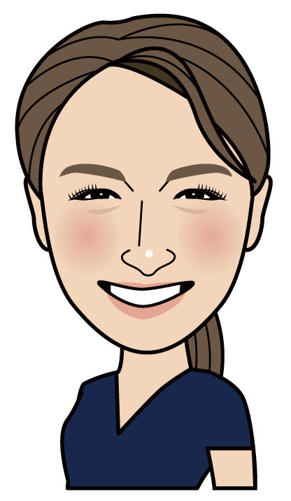

歯科衛生士 / マネージャー
塚元 美和
つかもと みわ
診療室でのメインテナンスも、医院の運営も担当しています。
- DH歴
- 10年目
- 勤務先
- 塚口オオマチ歯科・矯正歯科
- 地域
- 兵庫県尼崎市
担当していること
衛生士業務
- メインテナンス
マネージャー業務
- スタッフ教育
- 採用
- 院内の仕組みづくり
- シフト管理
いま話したいテーマ
幹部教育
- 次のリーダー候補が育っていない
- 仕事を任せきれない
同じことで悩んでいる方、ぜひ声をかけてください。
こんな方とつながりたい
- 情報交換できる仲間
- 悩みを共有できる他院のマネージャー
仕事以外
- 旅行
- 国内も海外も
塚口オオマチ歯科・矯正歯科
兵庫県尼崎市
医院のサイトを見る